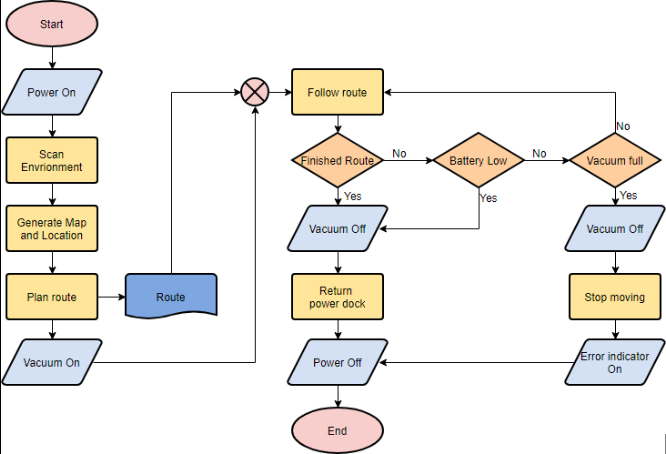
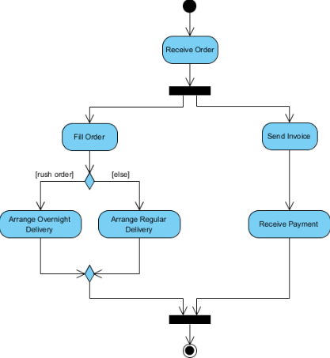

Flowchart / Activity Diagram
Flowchart ehk vooskeem on diagramm, millega kujutatakse protsessi samm-sammult.
Kus kasutatakse?
- Programmeerimisel algoritmide kirjeldamiseks
- Äriprotsesside modelleerimisel
- Süsteemide analüüsimisel
Peamised kujundid
Start / End
Protsessi algus või lõpp.
Process
Tegevus või käsk.
Decision
Tingimus, millel on mitu väljundit.
Input / Output
Andmete sisestamine või väljastamine.

Näide Activity Diagrammist

Bitcoin kalkulaatori vooskeem
Selle kursuse käigus koostatud Bitcoin kalkulaatori vooskeem on samuti
Flowchart diagrammi näide ning kirjeldab rakenduse tööloogikat.
Viited
- https://www.visual-paradigm.com
- https://www.lucidchart.com
- https://www.smartdraw.com
Tagasi UML indeksisse